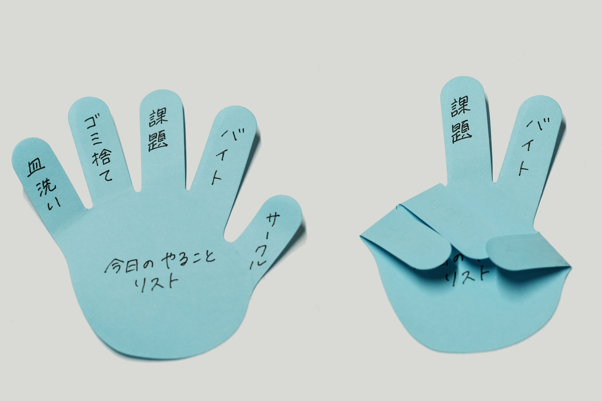

仙波 真二Semba Shinji
経営学部 経営学科 講師
#サービスデザイン
#デザイン思考
#アート思考
#意味のイノベーション
サービスデザインの実務経験を経て2020年より近畿大学にてサービスデザインの教育と研究を行っています。企業との共同研究を通じて、イノベーティブなコンセプトを創出する方法論の開発に取り組んでいます。
クリエイティブな経験を積み重ねることで創造的自信を醸成
近年、イノベーションと変革の推進力としてデザインへの期待が高まっています。実際、産学連携プロジェクトでは革新的なコンセプトを求められることが多いため、企業との共同研究を通じてイノベーティブなコンセプトを創出する活動を行っています
デザインプロセス
（１）アイデア発想
ビジネス上の制約がない学生の自由な発想をアート思考で引き出します。
（２）プロトタイピング
コンセプトの有用性を確認するためにデザイン思考の手法を用いてプロトタイピングとユーザーテストを行います。
（３）サービスデザイン
サービスデザインの手法を用いて包括的なデザインを検討します。
これらのクリエイティブな経験を積み重ねることで創造的自信を醸成します。
産学連携プロジェクト
遊び心があるタスク管理付箋「TO DO HAND 付箋」
株式会社カミオジャパンと合同で、近年文房具離れが著しいとされる大学生の関心を集めることを目指し、文房具を使う楽しさを演出する付箋をデザインしました。

https://newscast.jp/news/7940551
学生が考えた「なりたい自分になれるスーツ」
大阪ソーイング株式会社と共同で、スーツ離れが著しいと言われる若者をターゲットに、6種類の「なりたい自分になれるスーツ」をデザインしました。